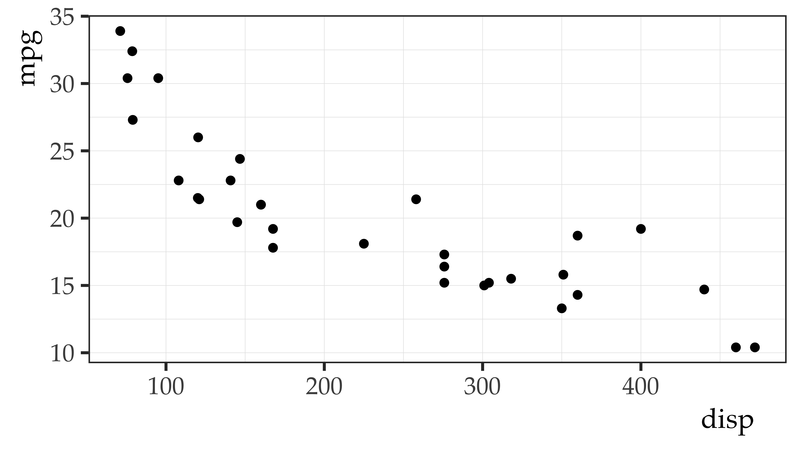

my_sum <- sum(vocab_sample$`(z_x)(z_y)`)
my_n <- (nrow(vocab_sample) - 1)
my_r <- my_sum / my_n
my_r[1] 0.9254545Joseph V. Casillas, PhD
Rutgers University
Last update: 2025-02-15
Statistical assumptions
Statistical assumptions
Statistical World-Views
Plato (380 BC) The Republic
Aristotle (350 BC) De Partibus Animalium
Both philosophers believed in categories:
But their definition of what categories were and where they came from was discrepant
Alfonso X “El Sabio” of Castile
to the rescue!
Newton and Darwin
Newtonian thinking:
Persistent Influences of the
Newtonian World-View
Later development: the Analysis of Variance (ANOVA)
characterizes all individual differences (variance) as error
.
Nominalist Implications
The Darwinian
Worldview
The Darwinians:
Sir Francis Galton
Attack of the Clones
The Darwinians: Sir Francis Galton
Twin and Adoption Studies
Deviations from the Mean
The Darwinians: Karl Pearson
The descriptive statistic that measures the degree of linear association between any two variables:
Correlation coefficient (r)
\[z_x = \frac{(x_i - \bar{x})} {s_x} \qquad \qquad z_y = \frac{(y_i - \bar{y})} {s_y}\]
\[r_{xy} = \frac{\sum (z_x) (z_y)}{n - 1}\]
Vocabulary size and age
Bivariate correlation
Let’s sample the data and calculate Pearson’s correlation coeficient for age and vocabulary size
\[\frac{\sum_{i}^{n} \left ( \frac{x_i - \bar{x}}{s_x} \right ) \left ( \frac{y_i - \bar{y}}{s_y} \right )}{n - 1} = \frac{\sum_{i}^{n} \left ( z_x \right ) \left ( z_y \right )}{n - 1} = {r_{xy}}\]
\[\frac{\sum_{i}^{n} \left ( \frac{x_i - \bar{x}}{s_x} \right ) \left ( \frac{y_i - \bar{y}}{s_y} \right )}{n - 1} = \frac{\sum_{i}^{n} \left ( z_x \right ) \left ( z_y \right )}{n - 1} = {r_{xy}}\]
| Vocab_sample | x | y |
|---|---|---|
| 1 | 9.50 | 12.44 |
| 2 | 4.25 | 3.58 |
| 3 | 6.45 | 9.71 |
| 4 | 6.94 | 7.69 |
| 5 | 5.47 | 5.59 |
| 6 | 10.71 | 14.77 |
| 7 | 11.07 | 10.24 |
| 8 | 8.39 | 7.95 |
| 9 | 14.73 | 21.99 |
| 10 | 9.99 | 13.63 |
| 11 | 12.92 | 15.69 |
| 12 | 4.29 | 6.57 |
\[\frac{\sum_{i}^{n} \left ( \frac{\color{red}{x_i} - \bar{x}}{s_x} \right ) \left ( \frac{\color{blue}{y_i} - \bar{y}}{s_y} \right )}{n - 1} = \frac{\sum_{i}^{n} \left ( z_x \right ) \left ( z_y \right )}{n - 1} = {r_{xy}}\]
| Vocab_sample | x | y |
|---|---|---|
| 1 | 9.50 | 12.44 |
| 2 | 4.25 | 3.58 |
| 3 | 6.45 | 9.71 |
| 4 | 6.94 | 7.69 |
| 5 | 5.47 | 5.59 |
| 6 | 10.71 | 14.77 |
| 7 | 11.07 | 10.24 |
| 8 | 8.39 | 7.95 |
| 9 | 14.73 | 21.99 |
| 10 | 9.99 | 13.63 |
| 11 | 12.92 | 15.69 |
| 12 | 4.29 | 6.57 |
\[\frac{\sum_{i}^{n} \left ( \frac{x_i - \color{red}{\bar{x}}}{\color{blue}{s_x}} \right ) \left ( \frac{y_i - \color{red}{\bar{y}}}{\color{blue}{s_y}} \right )}{n - 1} = \frac{\sum_{i}^{n} \left ( z_x \right ) \left ( z_y \right )}{n - 1} = {r_{xy}}\]
| Vocab_sample | x | y |
|---|---|---|
| 1 | 9.50 | 12.44 |
| 2 | 4.25 | 3.58 |
| 3 | 6.45 | 9.71 |
| 4 | 6.94 | 7.69 |
| 5 | 5.47 | 5.59 |
| 6 | 10.71 | 14.77 |
| 7 | 11.07 | 10.24 |
| 8 | 8.39 | 7.95 |
| 9 | 14.73 | 21.99 |
| 10 | 9.99 | 13.63 |
| 11 | 12.92 | 15.69 |
| 12 | 4.29 | 6.57 |
| NA | NA | NA |
| Sum | 104.71 | 129.85 |
| Mean | 8.73 | 10.82 |
| SD | 3.36 | 5.15 |
\[\frac{\sum_{i}^{n} \color{red}{\left ( \frac{x_i - \bar{x}}{s_x} \right )} \left ( \frac{y_i - \bar{y}}{s_y} \right )}{n - 1} = \frac{\sum_{i}^{n} \color{red}{\left ( z_x \right )} \left ( z_y \right )}{n - 1} = {r_{xy}}\]
| Vocab_sample | x | y | z_x |
|---|---|---|---|
| 1 | 9.50 | 12.44 | 0.23 |
| 2 | 4.25 | 3.58 | -1.33 |
| 3 | 6.45 | 9.71 | -0.68 |
| 4 | 6.94 | 7.69 | -0.53 |
| 5 | 5.47 | 5.59 | -0.97 |
| 6 | 10.71 | 14.77 | 0.59 |
| 7 | 11.07 | 10.24 | 0.70 |
| 8 | 8.39 | 7.95 | -0.10 |
| 9 | 14.73 | 21.99 | 1.79 |
| 10 | 9.99 | 13.63 | 0.38 |
| 11 | 12.92 | 15.69 | 1.25 |
| 12 | 4.29 | 6.57 | -1.32 |
\[\frac{\sum_{i}^{n} \left ( \frac{x_i - \bar{x}}{s_x} \right ) \color{blue}{\left ( \frac{y_i - \bar{y}}{s_y} \right )}}{n - 1} = \frac{\sum_{i}^{n} \left ( z_x \right ) \color{blue}{\left ( z_y \right )}}{n - 1} = {r_{xy}}\]
| Vocab_sample | x | y | z_x | z_y |
|---|---|---|---|---|
| 1 | 9.50 | 12.44 | 0.23 | 0.31 |
| 2 | 4.25 | 3.58 | -1.33 | -1.41 |
| 3 | 6.45 | 9.71 | -0.68 | -0.22 |
| 4 | 6.94 | 7.69 | -0.53 | -0.61 |
| 5 | 5.47 | 5.59 | -0.97 | -1.02 |
| 6 | 10.71 | 14.77 | 0.59 | 0.77 |
| 7 | 11.07 | 10.24 | 0.70 | -0.11 |
| 8 | 8.39 | 7.95 | -0.10 | -0.56 |
| 9 | 14.73 | 21.99 | 1.79 | 2.17 |
| 10 | 9.99 | 13.63 | 0.38 | 0.55 |
| 11 | 12.92 | 15.69 | 1.25 | 0.94 |
| 12 | 4.29 | 6.57 | -1.32 | -0.82 |
\[\frac{\sum_{i}^{n} \color{purple}{\left ( \frac{x_i - \bar{x}}{s_x} \right ) \left ( \frac{y_i - \bar{y}}{s_y} \right )}}{n - 1} = \frac{\sum_{i}^{n} \color{purple}{\left ( z_x \right ) \left ( z_y \right )}}{n - 1} = {r_{xy}}\]
| Vocab_sample | x | y | z_x | z_y | (z_x)(z_y) |
|---|---|---|---|---|---|
| 1 | 9.50 | 12.44 | 0.23 | 0.31 | 0.07 |
| 2 | 4.25 | 3.58 | -1.33 | -1.41 | 1.88 |
| 3 | 6.45 | 9.71 | -0.68 | -0.22 | 0.15 |
| 4 | 6.94 | 7.69 | -0.53 | -0.61 | 0.32 |
| 5 | 5.47 | 5.59 | -0.97 | -1.02 | 0.99 |
| 6 | 10.71 | 14.77 | 0.59 | 0.77 | 0.45 |
| 7 | 11.07 | 10.24 | 0.70 | -0.11 | -0.08 |
| 8 | 8.39 | 7.95 | -0.10 | -0.56 | 0.06 |
| 9 | 14.73 | 21.99 | 1.79 | 2.17 | 3.88 |
| 10 | 9.99 | 13.63 | 0.38 | 0.55 | 0.21 |
| 11 | 12.92 | 15.69 | 1.25 | 0.94 | 1.17 |
| 12 | 4.29 | 6.57 | -1.32 | -0.82 | 1.08 |
\[\frac{\color{green}{\sum_{i}^{n} \left ( \frac{x_i - \bar{x}}{s_x} \right ) \left ( \frac{y_i - \bar{y}}{s_y} \right )}}{n - 1} = \frac{\color{green}{\sum_{i}^{n} \left ( z_x \right ) \left ( z_y \right )}}{n - 1} = {r_{xy}}\]
| Vocab_sample | x | y | z_x | z_y | (z_x)(z_y) |
|---|---|---|---|---|---|
| 1 | 9.50 | 12.44 | 0.23 | 0.31 | 0.07 |
| 2 | 4.25 | 3.58 | -1.33 | -1.41 | 1.88 |
| 3 | 6.45 | 9.71 | -0.68 | -0.22 | 0.15 |
| 4 | 6.94 | 7.69 | -0.53 | -0.61 | 0.32 |
| 5 | 5.47 | 5.59 | -0.97 | -1.02 | 0.99 |
| 6 | 10.71 | 14.77 | 0.59 | 0.77 | 0.45 |
| 7 | 11.07 | 10.24 | 0.7 | -0.11 | -0.08 |
| 8 | 8.39 | 7.95 | -0.1 | -0.56 | 0.06 |
| 9 | 14.73 | 21.99 | 1.79 | 2.17 | 3.88 |
| 10 | 9.99 | 13.63 | 0.38 | 0.55 | 0.21 |
| 11 | 12.92 | 15.69 | 1.25 | 0.94 | 1.17 |
| 12 | 4.29 | 6.57 | -1.32 | -0.82 | 1.08 |
| NA | NA | NA | NA | NA | NA |
| Sum | 104.71 | 129.85 | 0 | 0 | 10.18 |
| Mean | 8.73 | 10.82 | 0 | 0 | NA |
| SD | 3.36 | 5.15 | 1 | 1 | NA |
\[\frac{\sum_{i}^{n} \left ( \frac{x_i - \bar{x}}{s_x} \right ) \left ( \frac{y_i - \bar{y}}{s_y} \right )}{n - 1} = \frac{\sum_{i}^{n} \left ( z_x \right ) \left ( z_y \right )}{n - 1} = {\color{red}{r_{xy}}}\]
my_sum <- sum(vocab_sample$`(z_x)(z_y)`)
my_n <- (nrow(vocab_sample) - 1)
my_r <- my_sum / my_n
my_r[1] 0.9254545or
Pearson’s correlation coefficient = 0.9254545.
Doing it in R
cor()
cor.test()

Practice - test scores
Load the test_scores_rm dataset from the ds4ling package.
# A tibble: 16 × 4
id spec test1 test2
<chr> <chr> <dbl> <dbl>
1 span01 g1_lo 64.3 69.2
2 span02 g1_lo 59.8 63.7
3 span03 g1_hi 66.1 70.9
4 span04 g1_hi 72.8 79.2
5 span05 g2_lo 68.3 75.4
6 span06 g2_lo 69.2 76.7
7 span07 g2_hi 71.4 77.2
8 span08 g2_hi 80.4 88.9
9 cata01 g1_lo 75.6 83.6
10 cata02 g1_lo 71.2 78.8
11 cata03 g1_hi 69.1 74.6
12 cata04 g1_hi 72.4 80.7
13 cata05 g2_lo 71.7 77.9
14 cata06 g2_lo 69.0 75
15 cata07 g2_hi 69.9 76
16 cata08 g2_hi 77.3 85.6